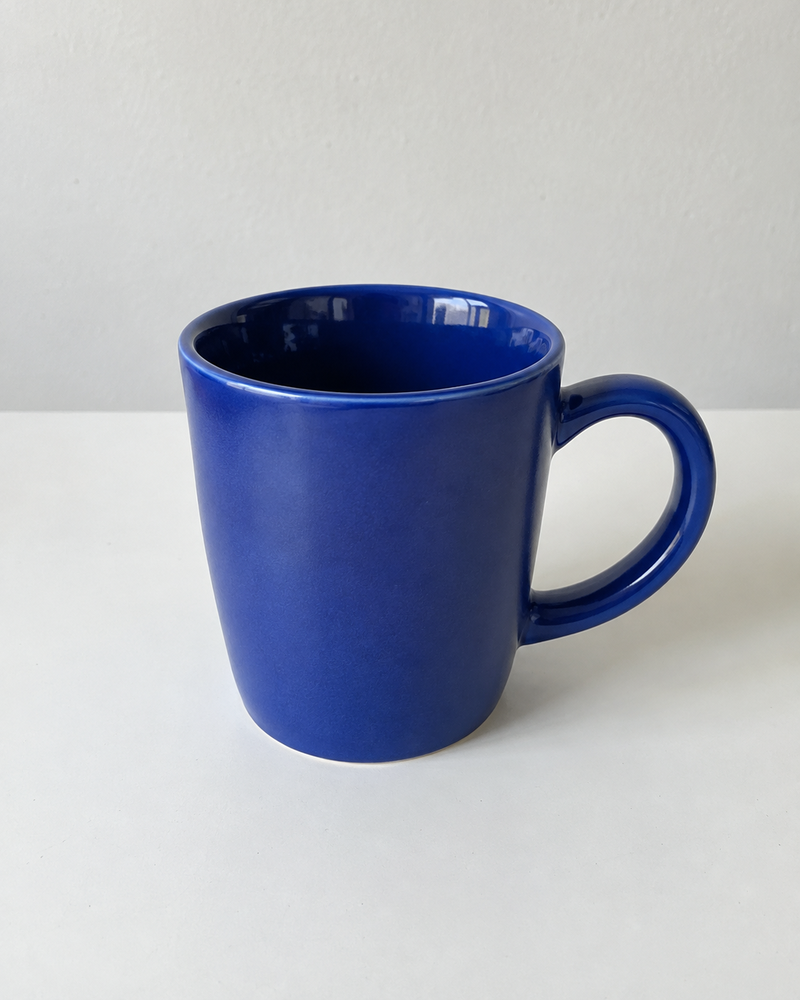
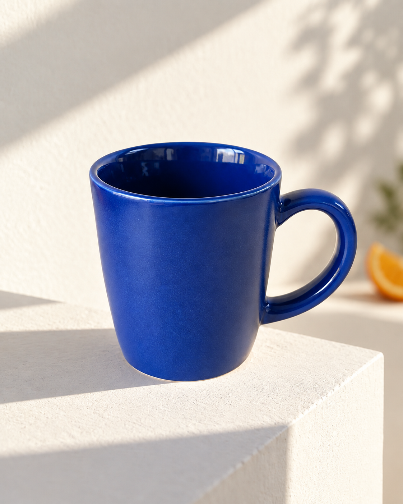
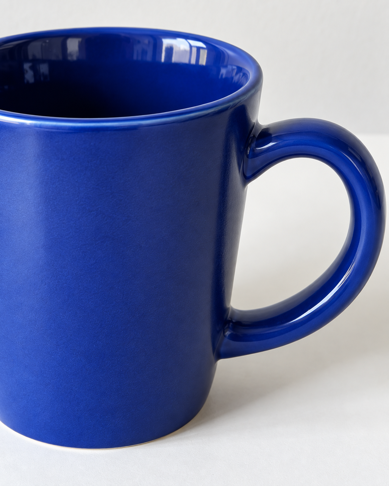
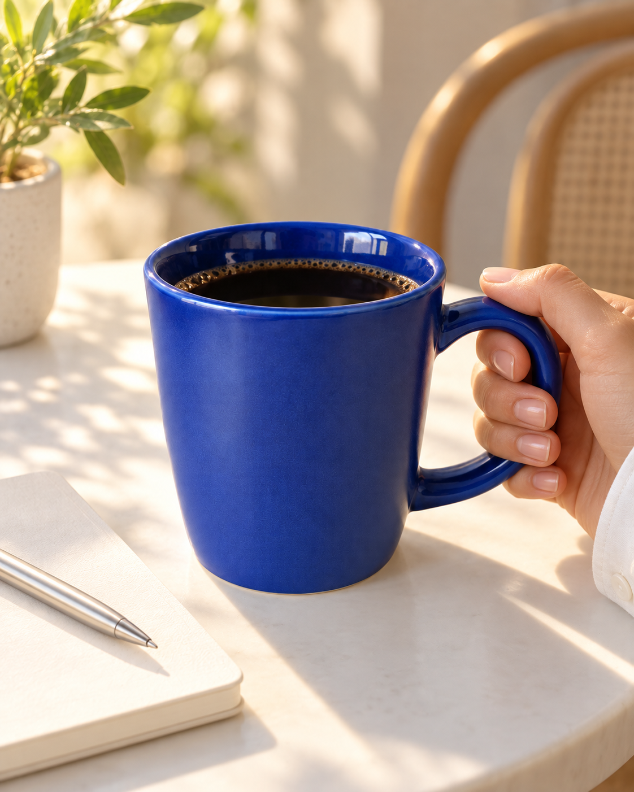

ChatGPT 이미지 편집 · 제품 사진




사진은 한 장인데, 광고는 세 컷.
01 · 사진 준비
먼저, 제품이 잘 보이는 사진 한 장.
02 · 세 컷의 역할
어떤 제품인지 한눈에
손잡이·질감처럼 가까이
언제, 어떻게 쓰는지
한 장에 한 가지 역할만 맡겨요.
03 · 결과 확인
원본
AI 결과
손잡이·색·테두리는 꼭 비교.
받아 가는 것
구조가 바뀌었을 때 고치는 문장까지
필요하면 댓글에 synk 남겨 주세요.